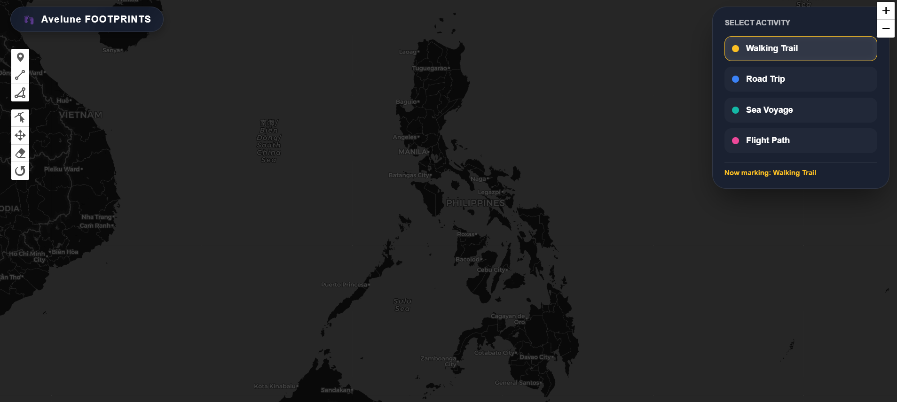

Traditional maps show you where to go. Travel Footprints is a high-fidelity digital journal that shows you where you've been. Trace your journey across the archipelago.

When you travel, taking photos is only half the story. The real adventure is the transit—the long ferry ride to Siargao, the winding drive up to Baguio, or the hiking trail in Mt. Pulag.
Travel Footprints provides the canvas for you to manually "paint" your history. Save the context, the dates, and the exact vibe of every location you visit.
Start Tracking NowA specialized toolkit designed to turn raw GPS coordinates into a beautiful, personal travel dashboard.
Select your transport mode (Walk, Car, Sea, Air). The system automatically color-codes and styles your track to reflect how you conquered the distance.
Drop interactive markers on the map. Log the date you visited and save a 1-word memory that captures the exact "soul" of that specific location.
Watch your travels come to life. The map features an automatic playback animation that traces your route with a moving icon the moment you save a track.
Enjoy a stress-free mapping experience. No complex databases—just an open, private canvas for you to experiment and visualize your footprint safely.